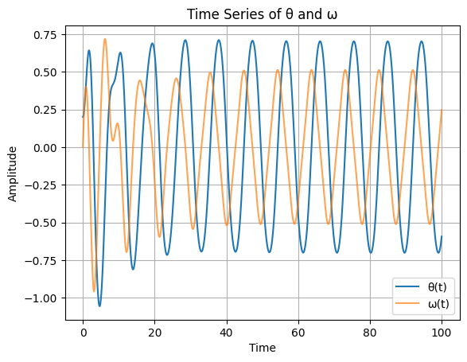
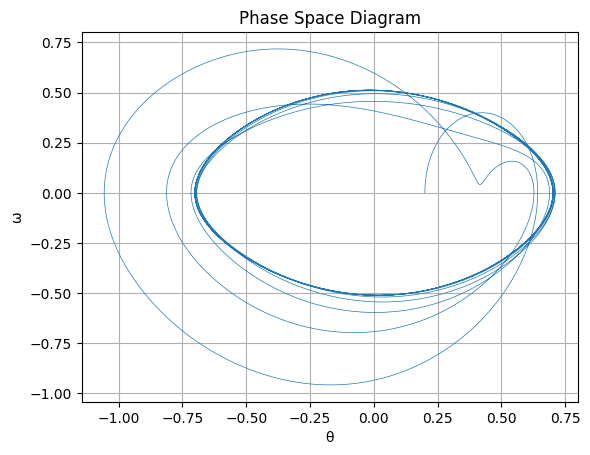
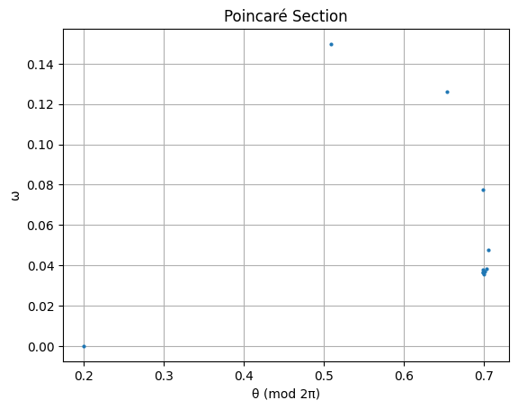
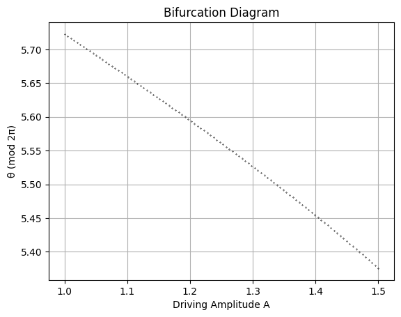
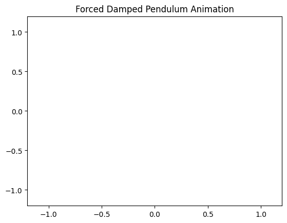

Problem 2
1. Theoretical Foundation
Governing Differential Equation
The equation of motion for a forced damped pendulum is derived from Newton's second law or the torque equation. It accounts for three forces: restoring torque, damping torque, and external driving torque. The governing equation is:
Where: - \(\theta(t)\) is the angular displacement, - \(\gamma\) is the damping coefficient, - \(\omega_0 = \sqrt{\frac{g}{l}}\) is the natural frequency of the undamped pendulum, - \(A\) is the amplitude of the external periodic driving force, - \(\omega\) is the driving frequency.
Linearization for Small-Angle Approximations
For small angular displacements, \(\theta \ll 1\), the sine function can be approximated by its Taylor expansion:
Thus, the linearized equation becomes:
This is the standard form of a driven damped harmonic oscillator.
Analytical Solution of the Linearized System
We consider the general solution as a sum of the homogeneous and particular solutions:
Homogeneous Solution:
Solve: $$ \frac{d^2\theta}{dt^2} + \gamma \frac{d\theta}{dt} + \omega_0^2 \theta = 0 $$
The characteristic equation is: $$ r^2 + \gamma r + \omega_0^2 = 0 $$
Its solution depends on the discriminant \(\Delta = \gamma^2 - 4\omega_0^2\): - Underdamped (\(\gamma^2 < 4\omega_0^2\)): Oscillatory decay - Critically damped (\(\gamma^2 = 4\omega_0^2\)): Fastest return to equilibrium without oscillation - Overdamped (\(\gamma^2 > 4\omega_0^2\)): Slow non-oscillatory return
Particular Solution:
Assume a solution of the form: $$ \theta_p(t) = B \cos(\omega t - \delta) $$
Substitute into the linearized equation and solve for amplitude \(B\) and phase lag \(\delta\): $$ B = \frac{A}{\sqrt{(\omega_0^2 - \omega^2)^2 + \gamma^2 \omega^2}}, \quad \tan(\delta) = \frac{\gamma \omega}{\omega_0^2 - \omega^2} $$
Natural Frequency (Undamped, Unforced System)
For the simple pendulum with no damping or driving force: $$ \frac{d^2\theta}{dt^2} + \omega_0^2 \theta = 0 $$
This is a second-order linear ODE with the solution: $$ \theta(t) = \theta_0 \cos(\omega_0 t + \phi) $$
Where: - \(\omega_0 = \sqrt{\frac{g}{l}}\) is the natural frequency, - \(\theta_0\) is the initial amplitude, - \(\phi\) is the initial phase.
Resonance Conditions
Resonance occurs when the driving frequency \(\omega\) approaches the natural frequency \(\omega_0\) of the system. In the absence of damping (\(\gamma = 0\)), the amplitude becomes:
With damping, resonance occurs at:
Energy Transfer under Resonance
At resonance, the energy input from the driving force is maximized. Energy is transferred into the system constructively, increasing the oscillation amplitude.
The instantaneous power delivered by the driving force is:
The average power over one cycle is maximized when \(\omega \approx \omega_{\text{res}}\), indicating efficient energy absorption and larger oscillations.
2. Analysis of Dynamics
2.1 Effect of Damping (\(\gamma\))
The damping coefficient \(\gamma\) controls the rate of energy loss in the system. Depending on the value of \(\gamma\), the system exhibits three distinct regimes in the absence of driving force (\(A = 0\)):
Underdamped (\(\gamma^2 < 4\omega_0^2\))
- The system oscillates with gradually decreasing amplitude.
- The solution takes the form: $$ \theta(t) = e^{-\frac{\gamma}{2} t} \left( C_1 \cos(\omega_d t) + C_2 \sin(\omega_d t) \right) $$ Where \(\omega_d = \sqrt{\omega_0^2 - \frac{\gamma^2}{4}}\) is the damped natural frequency.
Critically Damped (\(\gamma^2 = 4\omega_0^2\))
- The system returns to equilibrium as fast as possible without oscillating.
- General solution: $$ \theta(t) = (C_1 + C_2 t)e^{-\frac{\gamma}{2} t} $$
Overdamped (\(\gamma^2 > 4\omega_0^2\))
- No oscillations occur; the system returns to equilibrium slowly.
- The response is governed by two distinct exponential decays.
2.2 Varying Driving Amplitude (\(A\))
The driving amplitude determines the energy supplied to the system. As \(A\) increases:
- The steady-state amplitude of oscillation increases.
- At large \(A\), the nonlinear nature of the sine term becomes prominent, leading to:
- Asymmetric oscillations
- Sudden jumps in amplitude (discontinuities in response curves)
- Bifurcations, where the system transitions between different oscillatory modes
This nonlinear response can be visualized with bifurcation diagrams where \(\theta\) (or \(\dot{\theta}\)) is plotted against \(A\).
2.3 Varying Driving Frequency (\(\omega\))
When scanning across a range of driving frequencies \(\omega\) for a fixed amplitude:
- The system exhibits resonance behavior, peaking at or near \(\omega_0\).
-
The resonance curve shows the response amplitude \(B\) as a function of \(\omega\): $$ B(\omega) = \frac{A}{\sqrt{(\omega_0^2 - \omega^2)^2 + \gamma^2 \omega^2}} $$
-
In nonlinear systems, this curve becomes asymmetric and may exhibit hysteresis.
2.4 Identifying Conditions for Chaos
As both \(A\) and \(\omega\) increase, the forced damped pendulum can enter chaotic regimes.
Diagnostic Tools:
- Lyapunov Exponents: A positive largest Lyapunov exponent (\(\lambda > 0\)) indicates sensitivity to initial conditions—a hallmark of chaos.
- Bifurcation Diagrams: Show qualitative changes in the structure of solutions as a parameter (e.g., \(A\) or \(\omega\)) varies.
- Poincaré Sections: A stroboscopic map sampled once per drive cycle. A single point indicates periodic motion; a fractal structure indicates chaos.
2.5 Quasiperiodic and Chaotic Regimes
Quasiperiodic Motion:
- Involves two incommensurate frequencies.
- Phase space trajectories form tori.
- Poincaré section: closed curves.
Chaotic Motion:
- Aperiodic and highly sensitive to initial conditions.
- Phase space trajectory fills a strange attractor.
- Poincaré section: scattered points forming a fractal structure.
Visualization of both regimes helps to contrast ordered vs. disordered dynamics. Examples include:
- Time series: Smooth and repeating vs. irregular and erratic.
- Phase diagrams: Closed loops vs. tangled trajectories.
2.6 Stability of Fixed Points and Limit Cycles
To assess the stability of equilibria and periodic orbits:
Linear Stability Analysis:
Linearize around a fixed point or trajectory: $$ \theta'' + \gamma \theta' + f(\theta) = 0 $$ Compute eigenvalues of the Jacobian matrix. If all have negative real parts, the fixed point is stable.
Floquet Theory:
Used for periodic solutions. Determines the stability of limit cycles by examining the monodromy matrix: - If all Floquet multipliers have magnitude < 1: the cycle is stable. - If any multiplier > 1: the cycle is unstable.
This analytical toolkit enables a comprehensive understanding of the pendulum's dynamic behavior across parameter regimes.
3. Practical Applications
The forced damped pendulum serves as a versatile analog for many real-world systems governed by similar nonlinear dynamics, especially those involving periodic driving and energy dissipation.
3.1 Real-World Analogues of the Forced Damped Pendulum
Several physical systems can be modeled or approximated by the dynamics of a forced damped pendulum:
A. Suspension Bridges
- Example: Tacoma Narrows Bridge (1940 collapse).
- The bridge deck behaved like a driven oscillator, responding to periodic wind forces.
- Self-excited oscillations and aerodynamically driven resonance resulted in torsional instability and eventual structural failure.
- Model Mapping:
- Angular displacement \(\theta(t) \leftrightarrow\) torsional deflection of the bridge.
- Driving force \(A \cos(\omega t) \leftrightarrow\) periodic wind gusts or vortex shedding.
- Damping \(\gamma \leftrightarrow\) internal and aerodynamic damping.
B. Piezoelectric Energy Harvesters
- These devices convert mechanical vibrations into electrical energy.
- Typically modeled as a damped driven cantilever beam, which behaves similarly to a pendulum.
-
Optimal energy transfer occurs at or near the resonant frequency.
-
Key Model Parameters:
- \(\omega_0\) matches the structure’s natural frequency.
- \(A\) corresponds to ambient vibration amplitude.
- \(\gamma\) accounts for mechanical and electrical energy losses.
C. Electronic RLC Circuits Under AC Drive
- The behavior of a resistor-inductor-capacitor (RLC) circuit driven by an AC source is mathematically identical to the linearized forced damped pendulum.
Governing Equation for RLC Circuit:
- Map to pendulum model:
- \(Q(t) \leftrightarrow \theta(t)\) (charge analogous to angular displacement),
- \(R \leftrightarrow \gamma\) (resistance as damping),
-
\(1/\sqrt{LC} \leftrightarrow \omega_0\) (resonant frequency).
-
Important insight: Signal clarity and selectivity in RLC filters depend on the damping and proximity to resonance.
3.2 Engineering Considerations
A. Resonance
- Systems operating near resonance can exhibit large-amplitude oscillations:
- In bridges → destructive structural vibration.
- In circuits → signal amplification or filtering.
-
In energy harvesters → optimal power output.
-
Engineers must:
- Design systems to avoid unwanted resonance (e.g., bridge design, building sway),
- Or exploit resonance safely (e.g., vibration-based energy harvesting).
B. Chaos
- In mechanical or electrical systems, chaotic behavior implies extreme sensitivity to initial conditions and unpredictable response.
- Can lead to:
- Mechanical failure,
- Signal distortion or noise in electronic circuits,
-
Instability in feedback control systems.
-
Design strategies involve:
- Damping augmentation to suppress chaotic regions,
- Parameter tuning to confine systems within stable regimes.
C. Efficiency and Stability
- Maximizing energy transfer or maintaining control requires:
- Precise tuning of system parameters (\(\omega\), \(A\), \(\gamma\)),
- Careful balancing between energy input and dissipation,
- Robust system architecture that can withstand unexpected transitions.
These practical mappings highlight the universality of the forced damped pendulum model and its relevance across structural, mechanical, and electrical engineering domains.
4. Computational Simulation and Visualization
1. Numerical Solver (Nonlinear Pendulum, Runge-Kutta)
import numpy as np
from scipy.integrate import solve_ivp
# Nonlinear forced damped pendulum
def pendulum(t, y, gamma, omega0, A, omega_drive):
theta, omega = y
dtheta_dt = omega
domega_dt = -gamma * omega - omega0**2 * np.sin(theta) + A * np.cos(omega_drive * t)
return [dtheta_dt, domega_dt]
# Parameters
gamma = 0.2
omega0 = 1.5
A = 1.2
omega_drive = 2/3
y0 = [0.2, 0] # Initial conditions: [theta, omega]
t_span = (0, 100)
t_eval = np.linspace(*t_span, 10000)
sol = solve_ivp(pendulum, t_span, y0, args=(gamma, omega0, A, omega_drive), t_eval=t_eval)
2. Time Series Plot (Angular Displacement and Velocity)
import matplotlib.pyplot as plt
plt.figure()
plt.plot(sol.t, sol.y[0], label='θ(t)')
plt.plot(sol.t, sol.y[1], label='ω(t)', alpha=0.7)
plt.xlabel('Time')
plt.ylabel('Amplitude')
plt.title('Time Series of θ and ω')
plt.legend()
plt.grid(True)
plt.show()

3. Phase Space Diagram (θ vs. ω)
plt.figure()
plt.plot(sol.y[0], sol.y[1], lw=0.5)
plt.xlabel('θ')
plt.ylabel('ω')
plt.title('Phase Space Diagram')
plt.grid(True)
plt.show()

4. Poincaré Section (Stroboscopic Map)
T_drive = 2 * np.pi / omega_drive
times = np.arange(0, t_span[1], T_drive)
indices = [np.abs(sol.t - t).argmin() for t in times]
theta_poincare = sol.y[0][indices]
omega_poincare = sol.y[1][indices]
plt.figure()
plt.plot(theta_poincare, omega_poincare, 'o', markersize=2)
plt.xlabel('θ (mod 2π)')
plt.ylabel('ω')
plt.title('Poincaré Section')
plt.grid(True)
plt.show()

5. Bifurcation Diagram (Varying A)
As = np.linspace(1.0, 1.5, 100)
theta_samples = []
for A_val in As:
sol = solve_ivp(pendulum, t_span, y0, args=(gamma, omega0, A_val, omega_drive), t_eval=t_eval)
times = np.arange(90, 100, T_drive)
indices = [np.abs(sol.t - t).argmin() for t in times]
theta_samples.extend([(A_val, sol.y[0][i] % (2 * np.pi)) for i in indices])
bif_As, bif_thetas = zip(*theta_samples)
plt.figure()
plt.plot(bif_As, bif_thetas, 'k.', markersize=0.5)
plt.xlabel('Driving Amplitude A')
plt.ylabel('θ (mod 2π)')
plt.title('Bifurcation Diagram')
plt.grid(True)
plt.show()

6. Animation of the Pendulum
import matplotlib.animation as animation
fig, ax = plt.subplots()
ax.set_xlim(-1.2, 1.2)
ax.set_ylim(-1.2, 1.2)
line, = ax.plot([], [], 'o-', lw=2)
def update(i):
x = np.sin(sol.y[0][i])
y = -np.cos(sol.y[0][i])
line.set_data([0, x], [0, y])
return line,
ani = animation.FuncAnimation(fig, update, frames=range(0, len(sol.t), 10), interval=30)
plt.title('Forced Damped Pendulum Animation')
plt.show()

Colab
https://colab.research.google.com/drive/1Hi5p_ObrtnwKTW3J3qKFETa2FQWf3d4b#scrollTo=xz71QtazDiuq